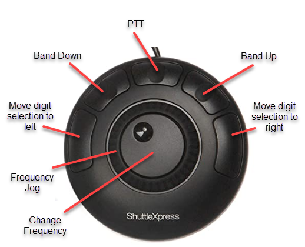
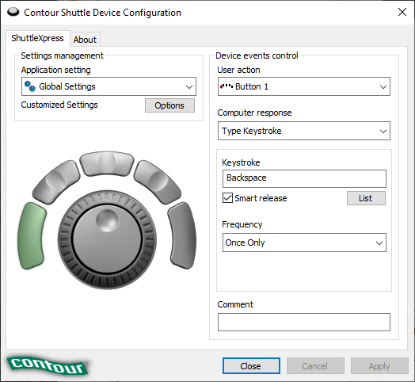

|
<< Click to Display Table of Contents >> Navigation: Other Programs > Contour ShuttleXpress |

The Contour ShuttleXpress provides a convenient way to adjust the RigPi frequency and control PTT using a Windows or Mac computer through a USB port. (A ShuttleXpress drvier is not available for Linux.) RigPi Preference files used to assign buttons and controls are provided for Chrome, Edge and FireFox browsers.
1.Download and install the Windows or Mac Driver program:
https://www.contourdesign.com/shuttle-drivers/
2.Download and unZip the RigPi Shuttle preferences file:
https://rigpi.net/downloads/RigPi-ShuttleXpress.zip
3.Start the Contour Shuttle Configuration Program (Windows)

4.Decide which browser you want to use, Chrome, Edge or FireFox. (If you want to another browser, you can creeate your own preferences file using instructions in the ShuttleXpress manual:
https://mk0uniclone3cn8yi1ru.kinstacdn.com/wp-content/uploads/2019/02/shuttle-product-manual.zip
5.Browser preferences are already included in the Application setting list. The one you want to use must be deleted, and the corresponding RigPi preferences file imported. For example, if you want to use Chrome to control RigPi, delete the Google Chrome entry in the list.
6.Import the RigPi preferences file you want to use from the Options menu.
7.When your selected browser is in front the RigPi buttons and controls can be used.